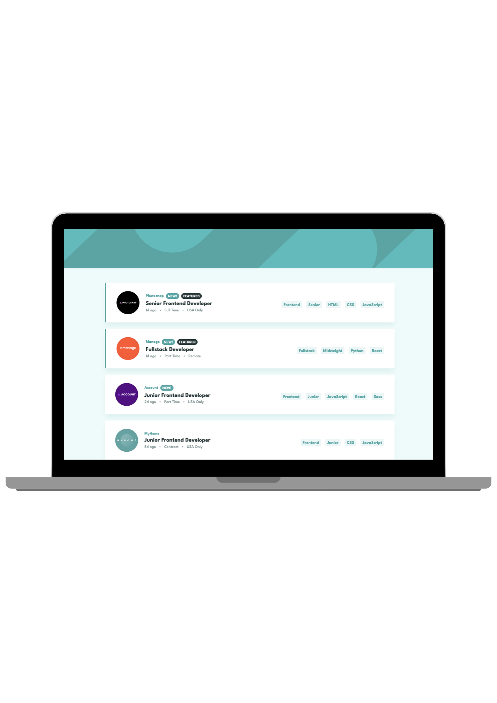

Job listings
En jobliste, hvor brugeren kan filtrere stillinger efter rolle, niveau, sprog og værktøjer. Projektet er en challenge fra Frontend Mentor, en platform med opgaver bygget over rigtige designs. Jeg valgte et design, hvortil jeg fik designfiler, en style guide og en datafil.
Løsningen blev bygget med frameworket Vue 3, så jeg kunne styrke mine kompetencer i Vue og bruge det, vi har lært i undervisningen.

Processen
Brief
Opgaven var at bygge en jobliste, der lå så tæt på det udleverede design som muligt. Til opgaven fulgte designfiler til mobil og desktop, en style guide med farver og typografi, logoer og ikoner samt en datafil med indholdet.
Briefen beskrev tre krav til løsningen. Brugeren skulle kunne filtrere jobs ud fra de valgte kategorier, få et layout tilpasset skærmstørrelsen og se hover- og fokustilstande på alle interaktive elementer.
Kravene gav et klart udgangspunkt for, hvad løsningen skulle kunne. De blev brugt som en tjekliste gennem udviklingen og til sidst til at vurdere, om løsningen levede op til opgaven.
Afgrænsning og valg af værktøjer
Designet var udleveret, så projektet fokuserede på udvikling frem for research og prototyping. Det gav mulighed for at arbejde målrettet med at omsætte et færdigt design til kode.
Challengen foreslog at bruge et JavaScript-framework som React eller Vue. Ud over at styrke mine kompetencer passede Vue godt til opgaven, fordi dataen kunne kobles direkte til det, der blev vist på siden, og listen kunne opdatere sig selv, når brugeren valgte et filter. Vite blev brugt til at sætte projektet op og bygge den færdige version.
Struktur og data
Før jeg begyndte at style, byggede jeg sidens struktur og fik dataen vist. JSON-filen
blev importeret i komponenten og gemt i en reaktiv variabel med ref. Med
directivet v-for blev der genereret et kort for hvert job-objekt i
arrayet, og :key gav hvert kort et unikt id, så Vue kunne holde styr på
elementerne.
Rolle, niveau, sprog og værktøjer lå som forskellige egenskaber i objektet. Rolle og niveau var enkelte værdier, mens sprog og værktøjer var arrays. Jeg skrev derfor en funktion, der samlede dem i ét array af tags pr. job, hvor spread-operatoren foldede de to arrays ud.
Strukturen blev opbygget med semantisk HTML, så indholdet gav mening uden styling.
Joblisten blev opbygget som en uordnet liste, og tags blev lavet som
<button>-elementer, fordi de skulle kunne klikkes og bruges med
tastaturet. Med conditional rendering via v-if blev mærkerne "New!" og
"Featured" kun vist på de jobs, hvor de var relevante, og med class binding fik
fremhævede jobs en ekstra klasse til styling.
Styling
Farver fra style guiden blev opsat som variabler i :root, så de kunne
genbruges på tværs af stylesheetet og ændres ét sted. Den udleverede font blev hentet
fra Google Fonts.
Jeg arbejdede med en mobile first-tilgang, og layoutet blev derfor opbygget ud fra den. Basisreglerne var skrevet til små skærme og blev tilpasset større skærme med media queries, hvor kortene gik fra at stå stablet på mobil til at samle logo, tekst og tags på én række med flexbox på desktop.
To dele af designet krævede særlige løsninger. På mobil sidder logoet halvt over kortets kant, hvilket blev løst med positionering i forhold til kortet. Prikkerne mellem dato, kontrakttype og lokation blev tilføjet med et pseudo-element i CSS, så de fungerede som visuel adskillelse uden at blive en del af indholdet. Fremhævede jobs fik en farvet kant via den klasse, Vue tilføjede med class binding, hvilket koblede stylingen direkte til dataen.
Filtrering
En stor del af opgaven handlede om, at brugeren skulle kunne filtrere jobbene. Jeg
valgte at gemme de valgte filtre i et reaktivt array, som startede tomt. Til det brugte
jeg directivet @click, en forkortelse for v-on:click, som
lytter efter klik og tilføjer tagget til arrayet. Funktionen tjekkede først med
includes(), om tagget allerede var valgt, så man ikke kunne tilføje det
samme tag mere end én gang.
Selve filtreringen blev løst med en computed property. Den gennemgik joblisten med
array-metoden filter() og brugte every() til at tjekke, om et
job indeholdt alle de valgte tags. Det betød, at hvert nyt filter indsnævrede resultatet
yderligere. Hvis der ikke var valgt nogen filtre, returnerede every() sand,
og hele listen blev vist.
Med en computed property holder Vue selv øje med de værdier, den afhænger af. Listen blev
derfor kun beregnet igen, når filtrene ændrede sig, og den oprindelige data forblev
uændret, fordi filter() returnerer et nyt array.
De valgte filtre blev vist i en filtersektion, som med v-if kun blev
renderet, når arrayet indeholdt mindst ét filter. Hvert filter kunne fjernes enkeltvis,
hvor arrayet blev erstattet af en ny version uden det valgte tag. Derudover lavede jeg
en "Clear"-knap, som nulstillede hele arrayet. Fordi filtrene var reaktive, opdaterede
både filtersektionen og joblisten sig automatisk ved hver ændring.
Interaktivitet og tilgængelighed
Tags og knapper blev bygget som native <button>-elementer frem for
klikbare <span>- eller <div>-elementer. Det betød,
at de automatisk kunne nås med Tab-tasten, aktiveres med Enter og mellemrum og blev
genkendt som knapper af skærmlæsere.
Til fokustilstandene brugte jeg pseudo-klassen :focus-visible, så
markeringen kun blev vist, når brugeren navigerede med tastaturet, og ikke ved klik med
musen. Hover og fokus fik samme visuelle udtryk, så brugeren fik samme feedback, uanset
om de brugte mus eller tastatur.
Designet havde ingen synlig hovedoverskrift, men jobtitlerne var
<h2>-elementer. For at bevare en logisk overskriftsstruktur tilføjede
jeg en <h1>, der var skjult visuelt med CSS, men stadig tilgængelig
for skærmlæsere. Logoer og ikoner fik alt-tekster, hvor kryds-ikonet beskrev, hvilket
filter det fjernede. Derudover blev sidens sprog angivet med lang="en", så
skærmlæsere udtalte de engelske tekster korrekt, og mærket "New!" blev vist med store
bogstaver via text-transform, så det blev læst som et ord og ikke stavet
bogstav for bogstav.
GitHub
Projektet blev versionsstyret med Git og lagt i et repository på GitHub. Jeg arbejdede alene og committede direkte til main-branchen efter hvert afsluttet trin, fx når en funktion virkede, eller en del af stylingen var færdig. Hvert commit fik en beskrivende besked, så versionshistorikken viste, hvordan løsningen var bygget op trin for trin.
De små, hyppige commits gjorde det muligt at vende tilbage til en tidligere version, hvis noget gik galt. Ved at pushe ændringerne til GitHub løbende var koden samtidig sikret uden for min egen computer.
Build og server
Vue-komponenter kan ikke læses direkte af browseren, så løsningen skulle bygges, før den
kunne lægges online. Da jeg var færdig med at udvikle produktet, kørte jeg kommandoen
npm run build i terminalen inde i VS Code, hvor Vite samlede HTML-, CSS- og
JavaScript-filer i en dist-mappe. Filer i public-mappen, som
logoer og baggrundsbilleder, blev kopieret direkte med.
Siden skulle ligge i en undermappe på serveren og ikke i roden af domænet. Derfor satte
jeg base: "./" i Vites konfiguration, så alle stier blev relative og
virkede uanset placering.
Som den sidste del af processen uploadede jeg indholdet af dist-mappen til
MMD's studentserver med FileZilla via skolens VPN.